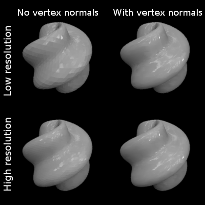

Improving rendering quality: mesh size and vertex normals¶
Mesh resolution¶
TODO: Larger/finer mesh: better approximation of the surface. Also larger files. Finer mesh enables higher-frequency modulation, but don’t use too large mash size as the file size increases accordingly.
Vertex normals¶
ShapeToolbox saves the 3D models as Wavefront .obj-files. The shape is represented as a collection of vertices and polygons, or faces, defined by these vertices. The .obj-file stores the vertex positions and the information about the faces (a face is a list of vertices). The more vertices (and faces) there are, the better a smoothly curved surface can be approximated. Of course, the more vertices, the larger the file size. A typical way to improve the quality of rendering of the model is to define vertex normals. A vertex normal is a three-dimensional vector that points in the direction of the surface normal of the surface-to-be-approximated at that location.
Turning the computation of normals on¶
ShapeToolbox has an option to compute the vertex normals. By default the computation is off to facilitate quick testing (computing the normals takes time), but it might be useful to turn it on for the final model.
To turn the computation of normals on, set the 'normals'-option to
true:
% by default, vertex normals are not computed:
objMakeSine('sphere',[4 .15 0 60])
% option 'normals' turns computation of surface normals on:
objMakeSine('sphere',[4 .15 0 60],'normals',true)
The following example illustrates the effect of including the surface
normals. It also illustrates another option, 'npoints', which
defines the resolution (number of vertices in the elevation and
azimuth directions) of the model. The example makes the same object
in four ways: with two resolutions and with surface normal computation
turned on/off.
objMakeSine('sphere',...
[6 .15 0 60],...
'npoints',[32 64],...
'normals',false,...
'sphere_lowres_no_normals.obj')
objMakeSine('sphere',...
[6 .15 0 60],...
'npoints',[32 64],...
'normals',true,...
'sphere_lowres_with_normals.obj')
objMakeSine('sphere',...
[6 .15 0 60],...
'npoints',[64 128],...
'normals',false,...
'sphere_hires_no_normals.obj')
objMakeSine('sphere',...
[6 .15 0 60],...
'npoints',[64 128],...
'normals',true,...
'sphere_hires_with_normals.obj')
The top row shows the low-resolution models and the bottom row the high-resolution models. The left-hand models are without vertex normals, the right-hand models are with vertex normals.
How the vertex normals are computed¶
The vertex normals are computed as a weighted average of the surface normals of all the faces the vertex belongs to. Each weight is proportional to the surface area of the face.
A few notes about the computation of vertex normals:
- Including the normals in the model results in a larger file size
- Computation of the normals takes time
- Some rendering programs might compute the normals automatically for the model object, so depending on what software you are using for rendering, you might or might not want to include the normals in the .obj-file.
- The computation of the normals in ShapeToolbox is not particularly advanced. It should do a good job for most shapes that are reasonably smoothly varying (and the functions in this toolbox are mainly meant to produce smoothly varying shapes). It does not handle sharp edges robustly: it calculates the vertex normals as it would for a smoothly curved surface, as a weighted average as described above. Better vertex normal algorithms can spot the edges that are meant to be sharp and handle them differently. The indiscriminate use of a weighted average by ShapeToolbox for all vertices means that sharp edges will appear duller than intended. Most of the time this should not be a problem though.